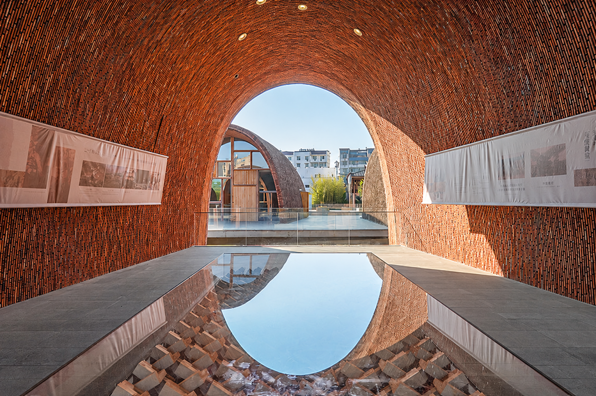
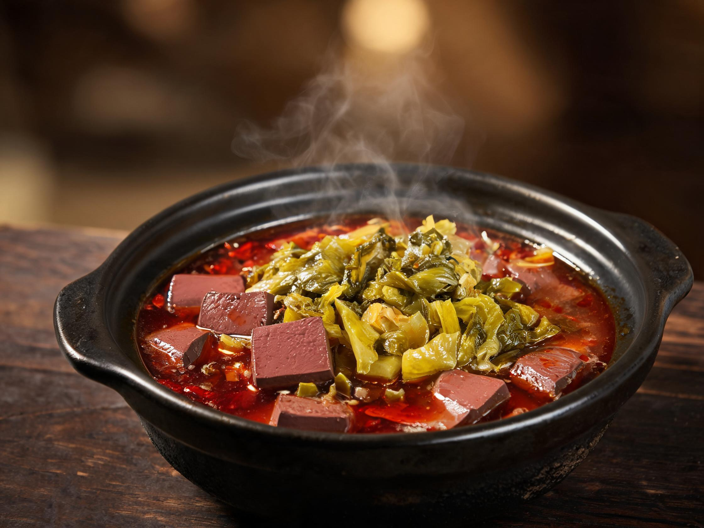

2026年武汉局集团公司职工秋游全面开启！
大美赣北，一路欢歌一路行。
粉墙黛瓦间，是徽州千年的水墨气韵；
青石板巷里，是晒秋人家的烟火温度。
两日行程，从婺源到景德镇，
在秋天最美的时节，赴一场山水与人文的约会。
位于婺源县秋口镇上河村，由与圣人朱熹同宗的朱氏建村，距今已有920多年历史。背倚青山，三面环水，形似大元宝。廊桥遗爱伴随碧水长流，远山如黛、清幽淡雅，于天光云影间沉淀，宛如一幅洗尽铅华的淡墨写意画卷。
历史悠久，文化底蕴丰厚。村内保存着完好的徽派古建筑——宗祠、书院、牌坊，承载着丰富的历史文化信息。青石板路蜿蜒，秋阳透过飞檐洒下斑驳光影。
距石门村仅数百米。因河道中一座月牙形狭长小岛而得名，一湾湖水如弯月静卧水面。薄雾轻纱，青茶绿树，蓝天白云倒映山水间，竹排悠闲行走，白鹭野鸭嬉戏——是婺源最具代表性的免费景点之一。
一座融合徽州文化、山水意境与现代旅游体验的古城。背倚青山、前临星江，保留了大量的徽派建筑、水街巷与水城墙。夜晚观赏非遗灯彩巡游，看灯火倒映在水面，体验如梦似幻的氛围。

自宋以来，景德镇先民"沿河建窑，因窑成市"，渐呈"码头—民窑—老街—里弄—御窑"聚落的历史空间。这里是景德镇制瓷业的中心、原点和高峰，是"一带一路"海上陶瓷之路的零公里起点，是中国走向世界的文化符号。
红辣椒、黄玉米、橙柿子，铺满竹匾晾晒在粉墙黛瓦的屋顶。这是徽州人家最朴素的秋天仪式，也是大自然最浓烈的调色盘。走进石门村晒秋广场，看烟火人间如何把丰收晾成一幅画。
白墙灰瓦，飞檐翘角，马头墙高低错落。水墨上河的明清古街、弦高城的程家大院与璧月门，每一砖一瓦都诉说着徽商鼎盛的繁华旧梦。这是徽派建筑留给岁月最安静的注脚。
廊桥遗爱伴碧水长流，月亮湾一弯如月静卧。竹排悠悠划过水面，晨雾里白鹭翩飞。在婺源的秋日，水是软的，桥是静的，时光是慢的——这是江南最温柔的底色。
当夜幕降临弦高城，鱼灯队伍从人民礼堂出发，穿行丁香雨巷，掠过廿九巷的非遗小店。灯火倒映水面，犁尖角双巷交汇的马头墙下，20:00的火秀表演点燃整个夜晚——这是一场可以走进去的梦。
